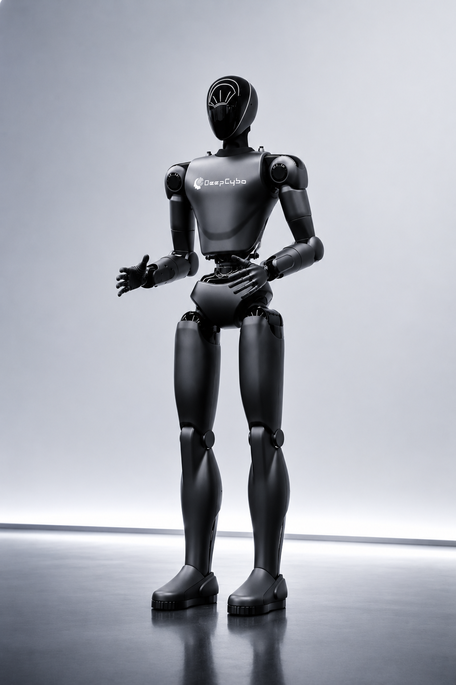
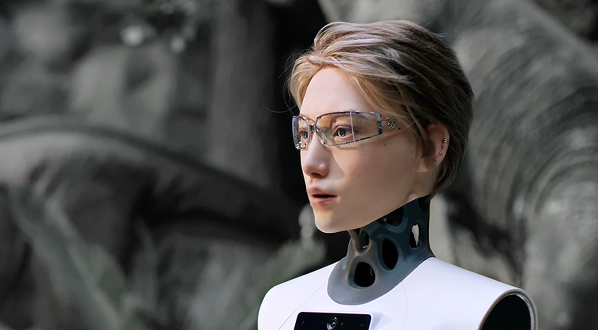

I am a master's student at the
University of Michigan School of Information
and a former humanoid robot industrial designer, now working on whole-body control for humanoid robots and
human-to-humanoid motion retargeting. At
DeepCybo,
I worked on whole-body control for
Unitree G1
soccer, including human-and-ball motion capture, motion retargeting, reinforcement-learning-based motion
tracking, sim-to-real deployment, and physical-robot shooting tests.
I am also a co-author of
Human-as-Humanoid.
I contributed to its
motion-retargeting pipeline, which converts recovered human motion into controller-aligned 60-DoF action
labels for the PrimeU
upper-body humanoid robot. Together, these projects connect motion data, whole-body
control, and physical deployment across two humanoid robot platforms.
Goal: Build whole-body control and embodied-AI systems that enable general-purpose
humanoid robots to perceive, adapt, and act in the physical world.
In early 2025, I moved into humanoid robot design at
Noetix Robotics,
where I worked on the industrial design of the
Xiaonuo
bionic humanoid robot. I later led the industrial design of the
Prime full-size humanoid robot while working with
Zhongguancun Academy
and Zhongguancun Institute of Artificial Intelligence.
When the project became
DeepCybo,
I was among its earliest team members and joined
the founders in early investor meetings. Those conversations repeatedly returned to the same question: what
intelligence would make the robot genuinely useful? That question convinced me to move from designing the
robot's body to developing the algorithms that control it.
I entered this transition with undergraduate foundations in mathematics and C programming, a score of 145/150
on the mathematics section of China's national college entrance examination, and confidence in my ability to
learn unfamiliar subjects. I studied machine learning through
Professor Hung-yi Lee's Machine Learning course
at National Taiwan University,
then took EECS 545: Machine Learning
at the University of Michigan. My final project,
SpaRe-lite,
explored spatial-representation rewards for sparse-reward reinforcement learning in the
LIBERO
simulation benchmark. On RedNote,
I continue this process by explaining recent robotics and embodied-AI
papers and tracing unfamiliar ideas back through their prerequisite literature. When I returned to
DeepCybo
in May 2026, my experience with reinforcement learning and my long-standing love of soccer led naturally to
the Unitree G1
soccer project presented above.
Xiaopeng Lin*, Ruoqi Yang*, Shijie Lian*, Zhaolong Shen*, Bin Yu*, Changti Wu, Haibao Liu, Yuxiang Zhang,
Hong Li, Qiyuan Su, Haochen Liu, Xuguo He, Yukun Shi, Cong Huang, Zhirui Zhang,
Bojun Cheng, Kai Chen
arXiv preprint, 2026.
A supervision framework for humanoid robots that converts synchronized ego-exo human videos into
controller-aligned 60-DoF action labels for
PrimeU
and high-DoF VLA policy training.
I am developing a soccer-motion pipeline for the
Unitree G1,
spanning synchronized human-and-ball motion capture, motion retargeting, physics review,
reinforcement-learning tracking, ONNX
export, and physical-robot validation.
The current corpus contains 5.20 hours of raw capture. After quality control and independent segmentation, the
V48 training set contains 104 recordings and 238 continuous segments (4 h 09 min, or 8 h 18 min with
left-right mirroring).
Latest tracking result. A 30.26-second single-motion
BeyondMimic
acceptance run completed a
full rollout, with 99.22% of final training episodes reaching the time limit. This stage evaluates the
whole-body motion tracker without ball rigid-body dynamics.
Next step. Couple the learned whole-body controller with ball contact dynamics and egocentric
perception so the robot can localize the ball and goal, adjust its support and approach, and execute skills
in closed loop.
Soccer shooting simulation with ball
Goal-directed shooting replay with the retargeted G1 motion, ball trajectory, and contact diagnostics.
Soccer shooting retargeting with ball
A G1 kinematic replay retaining the ball rigid-body trajectory, used to inspect the approach,
support-foot transition, and shot timing.
Ball-control reference with rigid-body trajectory
A 50 Hz physics-review replay of the robot and ball reference. The inspected sequence contains no
foot-ball penetration; it remains a reference trajectory rather than a closed-loop policy.
Physics-controlled ball RL rollout
A BeyondMimic
rollout with an independently simulated rigid-body ball. This is the strongest stage
result from that training branch, although repeated foot-ball contacts are not yet stable across
fixed-seed evaluations.
Six clips share this description: real-robot validation of the
ONNX-deployed soccer-shooting policy
from several camera views. The first two clips document the first shooting test, and the final vertical
clip also includes the corresponding human reference. Drag or swipe horizontally to view all clips.
First shooting test — wide viewFirst shooting test — side viewFront viewGoal-side viewSide viewRobot and human reference
This work was conducted during an industry internship. Videos and high-level results are shared here; source
code and implementation details are not publicly released.
Led an EECS 545: Machine Learning
final project on offline reinforcement learning for VLA sparse-reward tasks. Built 409 simulation rollout
transitions with failure samples and improved
LIBERO-10 success
rate from 16.13% after supervised fine-tuning (SFT) to 18.40%.
Led the industrial design of Prime, from its form language and exterior surfaces to packaging integration
and the final realized prototype. This experience became the bridge from my design background to embodied
intelligence and whole-body control.
Misc
2026
Research writing and community
Author of Chinese-language robotics research briefs for the Tsinghua MBA club focused on embodied
intelligence, and writer for EID research reports, covering paper selection, summaries, and technical
interpretation.
Before moving into algorithms, I led the industrial design of Prime at
DeepCybo's
earliest stage. The work
connected concept development, full-body form language, mechanical packaging, and the final physical prototype.
It also made the direction of my next chapter clear: understanding and building the intelligence that gives a
humanoid robot useful motion.

Complete design archive89 distinct images · click to expand89 distinct images in 6 groups · swipe horizontally; click an image to open the original
At Noetix Robotics,
I contributed to the industrial design of the
Xiaonuo
bionic humanoid robot. My work included the upper-body product identity, torso and neck surfacing,
face-and-screen integration, and manufacturable exterior geometry. This was my first direct step from
automotive design into humanoid robots.

Design gallery12 images · click to expand12 images · swipe horizontally; click an image to open the original